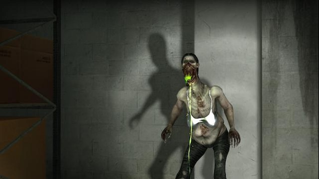
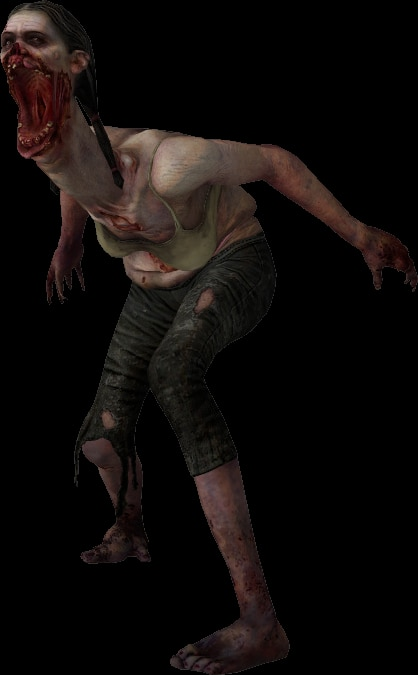

La mutación de la Spitter surgió días después del primer juego, Left 4 Dead, siendo este un infectado que ya fue un obstáculo para el grupo de protagonistas del segundo juego, Left 4 Dead 2.
Similar al infectado especial Boomer, la Spitter segrega una sustancia en su cuerpo y lo evacua en forma de vomito. El acido de Spitter es de color verde fosforescente y gotea desde las comisuras de su boca.
El Spitter puede atacar a largas o cortas distancias dado que el acido que esta expulsa no le hará daño a ella y a los infectados. Además, al eliminar a una Spitter todo el acido que tenía recolectado en su interior será expulsado creando un charco de acido frenando el paso de los sobrevivientes.

Contrario al otro infectado especial que igual puede expulsar sustancias de su cuerpo, la Spitter no cuenta con una versión miniatura o portátil de su acido para que pueda ser utilizado por los sobrevivientes. Viendo desde el punto de vista de desarrollo tener un objeto como este tendría la misma función que la bomba casera, dañando a todo infectado que entre dentro de la zona donde este objeto haya sido activado. Si se ve desde el punto de vista del juego podría explicarse a que la Spitter surgió después de la caída de la C.E.D.A. y el inicio del apocalipsis.
La Spitter es una infectada de una alta estatura, su boca se ve desgarrada y se vio fusionada con su cuello viendo un tamaño anormal. Debido a la mutación de su estatura sus brazos a pesar de mantenerse del tamaño de un humano normal estas se ven anormales en la anatomía del infectado. Sus ropas antes de caer en la infección portaban un top color blando y unos jeans.
Es recomendable atacar a la Spitter a mediana distancia y posteriormente retroceder. Al instante de entrar en el campo de vista de la Spitter ella disparara al instante su acido, en esos momentos de debe retroceder para evitar su acido mientras se dispara al infectado. Cuando la Spitter muere se forma un charco de ácido bajo ella. Es la manera más óptima para sobrevivir a la Spitter.

El origen de este infectado especial suele estar en disonancia con uno de los orígenes del infectado Boomer.
Antes de la gripe verde la Spitter era una mujer que tenía problemas gástricos o algún problema gástrico. Al llegar la gripe verde y sufrir la mutación debido al problema que portaba este infectado sus líquidos gástricos mutaron hasta volverse acido, debido a esto su boca se fue corroyendo hasta que se desgarró por completo.